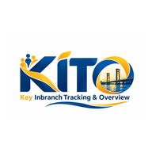

Aplikasi KITO untuk Android
Dashboard Monitoring Inbranch Region II, langsung dari layar utama HP Anda.
Unduh APK Buka Dashboard- Ketuk Unduh APK, tunggu sampai selesai.
- Buka file Dashboard-Kito.apk dari notifikasi atau folder Download.
- Bila diminta, izinkan Instal aplikasi tidak dikenal untuk browser ini.
- Ketuk Instal. Untuk pembaruan, cukup pasang APK versi baru di atas versi lama.